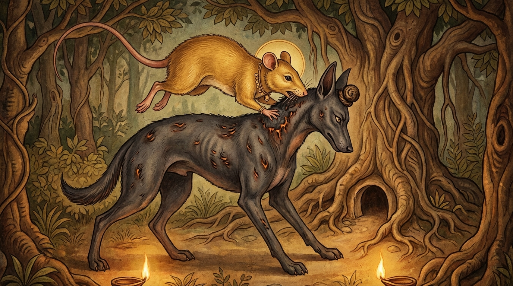

9. අග්ගික ජාතකය (129)
“නායං සිඛා පුඤ්ඤහෙතූ” (මේ සිළුව පින් පිණිස නොවේ) යන මේ ධර්ම දේශනාව බුදුරජාණන් වහන්සේ ජේතවනාරාමයෙහි වැඩ වාසය කරන සමයෙහි, එක් කුහක භික්ෂුවක් අරබයා වදාළ සේක.
අතීතයේ බරණැස් නුවර බ්රහ්මදත්ත රජු රාජ්ය කරන කල්හි බෝධිසත්වයෝ මී රජෙක් ව වනයෙහි වාසය කළහ. එකල්හි කැලෑ ගින්නක් හටගත් අතර, එක් හිවලෙක් ඉන් පලා යාමට නොහැකි ව ගසක හිස ඔබාගෙන සිටියේ ය. එවිට නරියාගේ මුළු සිරුරේ ම ලෝම දැවී ගියේ ය. එහෙත් ගසෙහි හිස ඔබාගෙන සිටි තැන, හිස මුදුනෙහි සිළුවක් (චූළා) මෙන් ලොම් ස්වල්පයක් ඉතිරි විය.
එක් දිනක් හෙතෙම පොකුණෙන් පැන් බොමින් සිටියදී දියෙහි වැටුණු සෙවනැල්ල බලා, තම හිස මුදුනෙහි වූ ඒ සිළුව දැක, “දැන් මට ජීවිකාව සලසා ගැනීමට (භාණ්ඩ මූලයක්) මඟක් පෑදුණේ ය” යි සිතී ය. වනයෙහි ඇවිදින ඔහු ඒ මී ගුල දැක, “මේ මීයන් ව රවටා කන්නෙමි” යි සිතා ඉහත කී ක්රමයට ම (තනි කකුලෙන් හිරු දෙස බලාගෙන) නුදුරෙහි සිටියේ ය.
ඉක්බිති බෝසත්හු ගොදුරු සොයා යන විට නරියා දැක “මොහු සිල්වතෙකැ” යි සිතා ඔහු වෙත ගොස් “නුඹගේ නම කුමක්දැ” යි විචාළහ.
“මම අග්ගික භාරද්වාජ වෙමි.”
“කුමක් සඳහා මෙහි පැමිණියෙහි ද?”
“නුඹලා රක්ෂා කිරීම පිණිස ය.”
“කුමක් කොට අප රකින්නෙහි ද?”
“මම අඟිලිවලින් ගණන් කිරීමට දනිමි. නුඹලා උදෑසන ම ගොදුරු පිණිස පිටත්ව යන වේලාවේ ‘මෙපමණ ය’ යි ගණන් කොට, නැවත එන වේලාවේ දීත් ගණන් කරන්නෙමි. මෙසේ උදේ හවස ගණන් කරමින් නුඹලා රකින්නෙමි.”
“එසේ නම් මාමණ්ඩිය, අප ව රක්ෂා කළ මැනව.”
නරියා “යහපතැ” යි එය පිළිගෙන, මීයන් පිටත්ව යන කල්හි “එක ය, දෙක ය, තුන ය” යි ගණන් කොට, නැවත එන කල්හි ද එසේ ම ගණන් කොට, සියල්ලන්ට ම පසුපසින් එන මීයා අල්ලාගෙන කයි. ඉතිරි විස්තර පෙර පරිදි ම ය.
මෙහි දී මී රජතෙම නැවතී සිට, “එම්බා අග්ගික භාරද්වාජ, නුඹේ හිස මුදුනෙහි මේ කෙස් රොදක් (සිළුවක්) තබාගෙන සිටින්නේ ධර්මතාවයක් නිසා නොව, හුදෙක් කුස පුරවා ගැනීම පිණිස ය” යි පවසා මේ ගාථාව කීවේ ය.
“මේ සිළුව (හිස මුදුනෙහි බැඳි කෙස් රොද) පින්කම් කිරීමේ අරමුණින් දැරූවක් නොවේ, මේ සිළුව ආහාර ගැනීමේ අරමුණින් දරන ලද්දකි. (ඔබේ) මේ ගණන් කිරීම මීයන්ගේ අඩුවීමක් මිස වැඩිවීමක් නොවේ. එබැවින් අග්ගිකය, ඔබගේ ගණන් කිරීම මෙපමණකින් නවතීවා (සෑහේවා)!”
එහි නාගුට්ඨිගණනං යාති යන්නෙහි අර්ථය නම්; ‘අඞ්ගුට්ඨිගණනා’ යනු ඇඟිලි ගණන් කිරීම යි. මේ මී සමූහයා (ඔබේ) ඇඟිලි ගණන් කිරීමට අනුව වර්ධනය නොවේ, සමීප නොවේ, සම්පූර්ණ නොවේ; හුදෙක් ක්ෂය වීමට ම යයි.
අලං තෙ හොතු අග්ගිකා යනු හිවලාගේ නමින් අමතමින් කියන ලද්දකි. ‘අග්ගිකය, නුඹට මෙපමණකින් සෑහේවා. මින්පසු නුඹට මීයන් කෑමට නොලැබෙයි. අප සමඟ හෝ නුඹ සමඟ හෝ එක්ව විසීමක් (සංවාසයක්) අවශ්ය නැත. අපි දැන් නුඹ සමඟ වාසය නොකරන්නෙමු’ යි යන අර්ථයි. ඉතිරිය පෙර පරිදි ම ය.

බුදුරජාණන් වහන්සේ මේ ධර්ම දේශනාව ගෙනහැර දක්වා ජාතකය සමාධාන කළ සේක. “එකල හිවලා වූයේ මේ භික්ෂුව ය. මී රජු වූයේ මම ම වෙමි.”
නව වැනි වූ අග්ගිකභාරද්වාජ ජාතක වර්ණනාව නිමියේ ය.